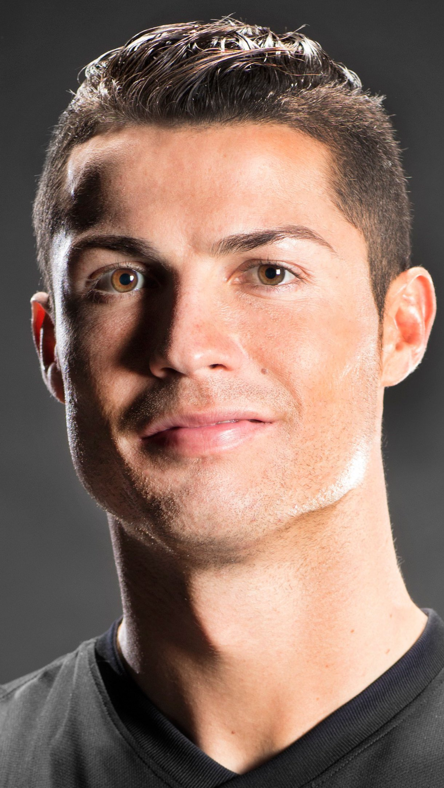

Cristiano Ronaldo

Cristiano Ronaldo “CR7” dos Santos Aveiro es un futbolista portugués que juega como delantero en el Manchester United Football Club de la Premier League de Inglaterra y en la selección de Portugal, de la cual es su capitán y máximo goleador histórico.